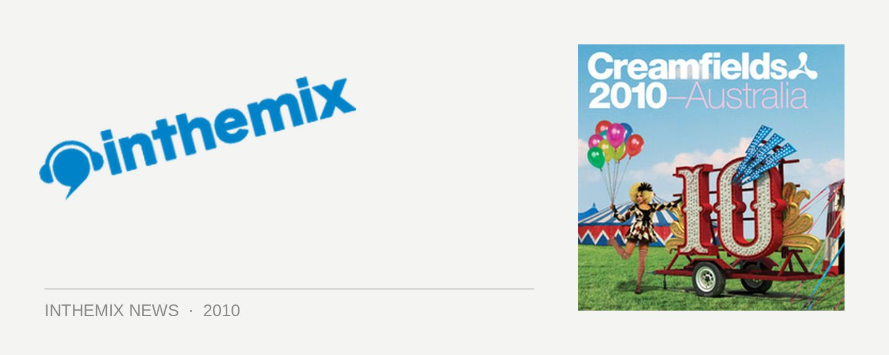

Creamfields debut lineup explodes onto ITM!
Take a look at our Creamfields Australia 2010 lineup showcase gallery here to see what you have in store this May!
Ladies and gentlemen, prepare for your excitement levels to redline! In just a few months time the Creamfields brand will make its debut in Australia, and it’s set to be one of the biggest entries to the Australian festival calendar in 2010. There’s a massive lineup of dance acts set to front proceedings, and you can check it out now on ITM!
Heading up the posse will be those naughty Italians The Bloody Beetroots and their brand new 6-piece band Death Crew 77, surely destined to create even more mayhem than what was witnessed on last year’s Stereosonic tour. Joining them will be Swedish House Mafioso Steve Angello, and Canadian electro crazies MSTRKRFT.
Perhaps the biggest surprise, though, is the strength of the trance contingent on the lineup. Ferry Corsten will be returning to represent the Cream brand in Australia once again, while Marco V will add his unmistakable touch of tech trance, joined also by Vandit favourites Filo & Peri.
Rounding it out will be a solid collection of underground heroes, spearheaded by techno titan Dave Clarke who’ll be making his first visit to Australia since 2004. Green Velvet is also down for Creamfields, as well as Dutchman Joris Voorn whose return won’t come a moment too soon (cleaning up so effectively in ITM Top 20 Releases of 2009!). Frenchman Lifelife has also been booked, along with buzz acts like Riva Starr, Zoo Brazil, Tommie Sunshine, the Bingo Players … and plenty more!
Clearly excited to be launching their newest festival, John Curtin from Onelove let us know they’ll be carrying over the learning and experience gained on last year’s Stereosonic tour, and applying it to the Australian debut of Creamfields this May. “We are super excited about bringing Creamfields to Australia,” he remarked. “[It’s] a quality lineup with world renowned acts, new acts and some of the best in many genres.
“After closing stages and causing absolute mayhem at Stereosonic we welcome The Bloody Beetroots to the main stage with their new live show,” John continued. “We also have some new bar setups to increase patron comfort, and we have been mindful of prices and listened to feedback, keeping tickets in initial stages below $100.”
First release tickets for Creamfields will be on sale for the bargain basement price of $79+bf (Mel, Bri & Per) and $85+bf (Syd) from 9am, Wednesday February 17th. You’ll be able to get them right here on ITM, as well as other outlets. Get in quick if you want to score them at the cheapest price!
Take a look at our Creamfields Australia 2010 lineup showcase gallery here to see what you have in store this May!
Lineup for Creamfields Australia 2010:
The Bloody Beetroots pres. Death Crew 77 (6 piece band)
Steve Angello
MSTRKRFT
Ferry Corsten
LMFAO (6 piece band)
Dave Clarke
Marco V
Green Velvet
Dirty South
Kid Sister
Joris Voorn
Lifelike
Riva Starr
Tommie Sunshine
Bingo Players
Zoo Brazil
Filo & Peri
Oh Snap!!
Creamfields Australia tour dates:
Sat May 1st – Horden Pavilion, Showring, RHI & Surrounds, Sydney
Sun May 2nd – Venue TBA, Perth
Mon May 3rd – Eagle Farm Racecourse, Brisbane – Public Holiday Long Weekend!
Sat May 8th – Royal Melbourne Showgrounds, Melbourne
Creamfields is proudly presented by inthemix – so for all the latest on the tour keep your eyes glued to our Festival Page with news, interviews, updates and more!
Take a look at our Creamfields Australia 2010 lineup showcase gallery here to see what you have in store this May!